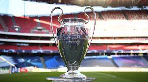

Soccer is a sport played globally across different countries by male and female, the young and old and even the youths.
Professional soccer is a game played with a simple football by 11 players(10 outfield players and a single goalkeeper) and the game is officiated by 4 officials namely; a referee, an assistant referee, a video assistant referee, and a linesman.
The referee makes use of his whistle, stopwatch and the cards(yellow and red). He makes use of the cards when he sees any unsportsman like behaviour by the players. The linesman's job is simply to walk along the sidelines and raise his flag when he detects players running into an "offside position". The assistant referees look out for anything the referee doesn't see.
The beautiful game is played only for 90 minutes and in 2 halves, the first half and second half are played for 45 minutes each with a 15 minutes break after the first half.
The game allows different fans from all over the world sit in strategically mapped positions in the stadium and cheer for the players and in the process, express their passion.
The beautiful game has evolved and new changes are implemented regularly. However, the concept of the game still remains as 11 players working together as a team to put the ball in the opposition's net. The game does so much more than entertain, but brings people from different parts of the world. The game has created so many legends who consistently delivered for so many years.
In football, two major trophies stand out. For club level, the Uefa Champions League is regarded as the most prestigious trophy and there's always a chance for a new team to get their hands on this incredibly alluring trophy every year. For national team level, the most prestigious trophy a country can win is the Fifa World Cup and there's always a chance for different nations to win as a new edition comes out every four years.
The current holders of the Uefa Champions League are Manchester City while the current holders of the World Cup are Argentina.

The pictures above are of the Uefa Champions League and Fifa World Cup respectively